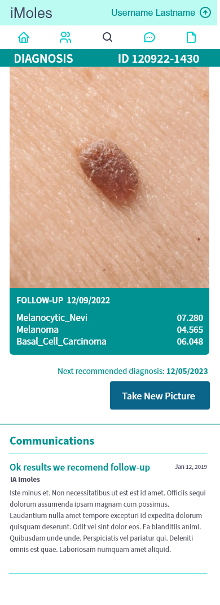
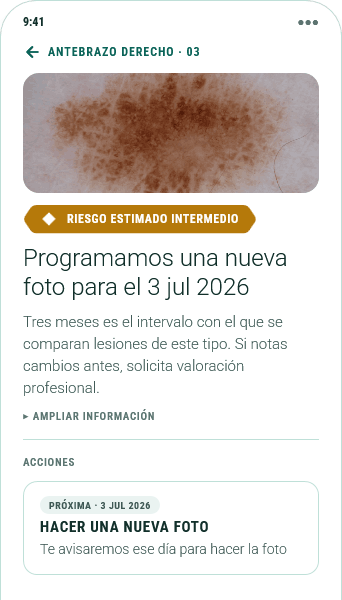
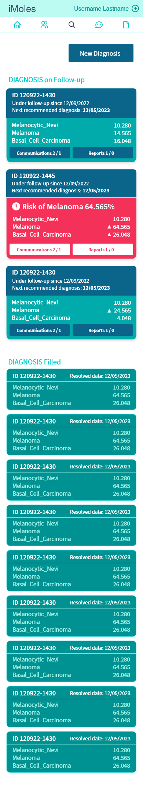
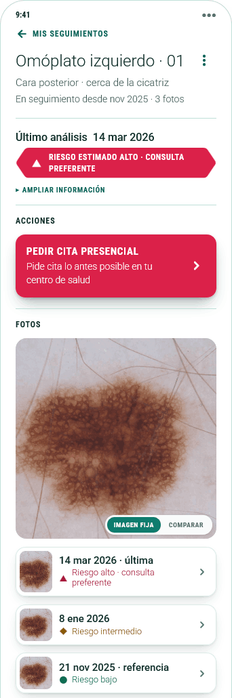
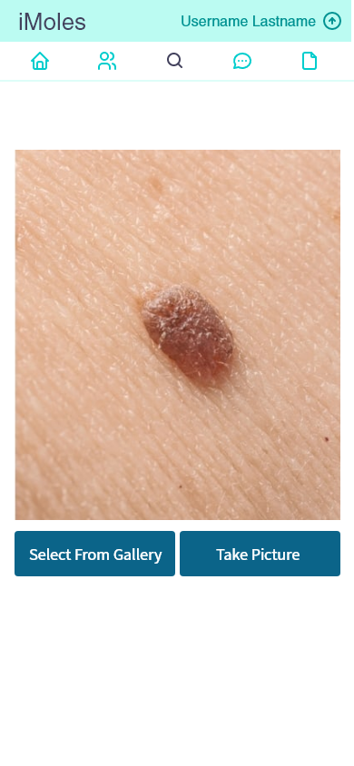
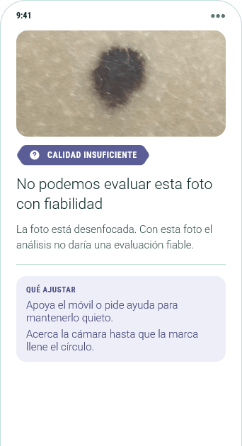
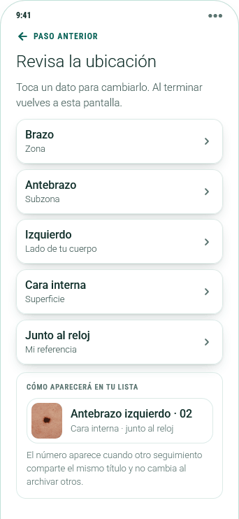

An app to assess risk and track the evolution of skin lesions, integrated into the medical diagnosis process. The proposal builds on a proof of concept for AI-based image analysis, developed through several iterations focused on both product definition and UX/UI.
Colleagues at the startup Elora built the technical core in 2019. Since then the product has gone through a series of adjustments and revisions, and I've taken part in defining the product through that process. What follows sets out that work: where we started, what we learned analysing the only competitor with published clinical evidence, which product decisions follow from that analysis, and how we defined the UX/UI strategy.
The proof of concept showed that the model classified skin images reliably enough. The product questions — who it's for, when it's used, what happens after the result and how it's communicated — were still at an early stage. The work was framed as an audit of that initial model, aimed at building a product with a clear fit in the healthcare ecosystem and a coherent user experience. The starting point is therefore described on two planes: what existed, and what still needed to be built.

The technical core worked: it classified a skin photograph into three classes and returned a probability for each. That work belongs to the technical team and sits outside the scope of this review.
Select image, analyse, result and list of analyses. Built to check that the model responded, and they did that job.
There was no scope document, no data model, no defined audience, no intended journey and no success criterion beyond model accuracy. A proof of concept doesn't need those things; a product in development does.
The challenge: turning a technical proof of concept into a functional product takes work on two layers. One is designing the screens and the user journey. The other, which comes first, is the product definition: deciding what entity organises the data, who the app is for, what it commits to doing and how it fits into the care circuit. This second layer drives much of the first, because the strategic product decisions are what later get translated into UX/UI principles.
These two planes structure the rest of the document. The first is answered in section 3, with the product-definition and care-fit decisions. The second, in section 4, with the interface decisions. Section 2 sits between the two because the competitor analysis provides information that shapes the product decisions.
SkinVision is the only melanoma-screening app with published clinical evidence and independent review. We analyse it as a test bed rather than a commercial competitor: it shares our core problem — detecting melanoma from images —, it's in production and its trial results are public. Evaluating it lets us estimate the realistic viability and scope of a product in this category.
How it builds its result, according to its product documentation and the published studies. The model's input unit is a single photograph.
The user marks the lesion on a body map, and the app only allows a shot when the image is centred, hair-free and sharp. It's the only filter before the model.
A neural network evaluates each macroscopic photograph on its own and places it in low, medium or high risk. Comparison against earlier captures of the same lesion is not part of the analysis.
The result becomes two exits: see a doctor, or do nothing. The product defines no intermediate tier and no deadline of its own.
A panel of dermatologists reviews the images within 48h. In the trial they lowered the risk assigned by the algorithm in 9.9% of cases and raised it in 0.7%. Human review mostly corrects false positives.
Two studies have been published: a randomised trial on the impact on the health system, and a prospective hospital validation of diagnostic performance. Their results are the public information available to estimate the scope of a product in this category, ours included.
Real-world performance came in below the advertised figures: sensitivity 41–83% and specificity 60–83% across 1,204 lesions, against the stated 95% / 78%. That gap depends partly on the technical resolution of the image analysis and partly on the current state of the technology.
The room for improvement is in the unit of analysis rather than the interface. A classifier that evaluates a single isolated photograph has an accuracy ceiling design doesn't move, so our contribution has to sit in what information the model is given.
It flagged 224 of 1,204 lesions as suspicious; dermatologists flagged 9. The extrapolated number needed to treat was 259 excisions per melanoma, against 9.6.
Every referral has a cost to the health system. A product that refers whenever it's unsure pushes its uncertainty onto the health system, resulting in appointments and biopsies of benign lesions. This forces us to define the cases where the product resolves without referring.
In the randomised trial (19,009 participants) melanoma was not detected at an earlier stage, and appointments and biopsies for benign lesions increased.
The success metric has to include cost per finding alongside the number of cases detected. With only the second figure, a product can look effective while it increases the load on the care circuit.
Sustained use fell from 53.9% in the first year to 16.2% in the second.
This figure affects our approach directly, because the product rests on comparing successive captures. Adherence is a functional requirement, not only a business metric.
Sources: Jahn, Navarini, Cerminara et al., Cancers 14(15):3829, 2022 (prospective study, University Hospital Basel); Smak Gregoor et al., SPOT randomised trial, 2025, and npj Digital Medicine 6:90, 2023; public product documentation. The figures are SkinVision's and are used here as a benchmark for the state of the art.
These are open problems of the category, applicable to any image-based melanoma-detection product, ours included. Each gets an answer in the next section.
Measured independently, a classification based on a single photograph falls below the accuracy needed to decide about a lesion. The limit is in the unit of analysis. A single photograph doesn't contain what a dermatologist looks at first, which is the lesion's evolution.
A consumer product that behaves as though it diagnoses can fail in two ways, and both have a cost. If it refers whenever it's unsure, it pushes its uncertainty onto the health system and generates appointments and biopsies of benign lesions. If it reassures, it produces a pseudo-diagnosis the user may take for a medical assessment. The design has to set a position between those two extremes and make it explicit.
Sustained use drops sharply after the first year. For a one-off product that hits the business. For a product that compares successive captures it hits how the product functions: with no return from the user, the series of images the analysis needs never builds up. Adherence becomes a condition of operation.
The three contributions in section 3 answer these three problems, in the same order.
Three product decisions that answer, one by one, the three problems from the benchmark. They define what the product is, what it commits to doing and where it fits in the care circuit.
The proof of concept stored loose analyses, with no way to record that two photographs correspond to the same mole. In dermatology the main warning sign is the lesion's evolution — the “E” in ABCDE — and it's the first factor a specialist weighs.
The shift is to stop storing analyses and start maintaining follow-ups, each with its own series of captures. It's a change to the data structure with an effect across the whole app: it reorganises the list, the detail, the report and the capture flow.
It hands the user a task that didn't exist before: saying which follow-up each photo belongs to. A mistake there invalidates the comparison. Worth being precise about the scope too: storing and comparing captures gives context to whoever looks, it doesn't measure change automatically. Automated longitudinal analysis is separate work and depends on the technical team.
An evaluation issues an indication: what should be done, who should do it and within what deadline. The action is the operational commitment that materialises that indication, or a follow-up plan, or a preventive rule from the person's profile. It records the owner, the state, the criterion by which it closes and a reference to the entity it originated from: the analysis, the follow-up or the profile rule holds the information that supports the statement and the deadline, so the action does not duplicate those facts. Reminders and notifications attach to the action and do not replace it: a notification can disappear once read while the action stays open. A later evaluation can keep, bring forward, replace or cancel the previous action.
A capture can hold several versioned evaluations, which allows the history to be re-analysed when the model improves without asking for new photos. It's a modelling alternative, not architecture to implement now.
The initial approach repeated, in every result, the instruction to consult a professional. That policy produces the same effect described in the previous section: it pushes the cost onto the health system, leaves the user with no instruction they can act on, and reduces the product's usefulness to that of a go-between.
The alternative is to narrow the question the product answers. iMoles determines within what time frame a lesion should be reviewed again and who should do it, and takes responsibility for that statement. The product doesn't replace a professional's diagnosis, and that's the wording the interface uses: it describes the scope of what it does do rather than denying a capability. Every result carries a review date and an owner.
The first capture registers the follow-up, sets the reference pattern and schedules a second capture at short notice. With a single image, shape and colour are assessed without the evolution criterion, so reliability is lower than in a series and the communication policy changes: the result states that limit and the default outcome is the second capture, whatever the estimated level. Referral to a consultation is reserved for very high signals, above a clinically set threshold. The level-based staggered time frames apply from the second capture onward.
The product manages it: scheduled recapture, stored framing and a dated reminder. An atypical but stable lesion doesn't need an immediate consultation, and a professional assessment will be more useful in three months with two comparable images than right now with one.
A professional reviews the series asynchronously, without the patient present. This middle tier doesn't exist today in products of this category and lets most ambiguous cases be resolved without taking up an in-person slot.
The health system gets involved, and it does so with material already in hand: the dated series, the intervals between captures and the report. The consultation starts from a documented change and the professional has the history from the outset.
At set intervals a professional reviews, asynchronously, the accumulated series of cases the system did not escalate. How often is not the product's call: the interval is set clinically according to each person's risk — skin type, family history, nevus count, immunosuppression — just as it already works for dermatological check-ups. The design provides the mechanism, and the frequency stays a configurable parameter. Reviewing four dated images of the same lesion takes little professional time, which makes this the most efficient operation in the circuit. Its role is to keep oversight over the cases the product resolves without referring, so the decision not to refer doesn't fall entirely on the user. When the review flags something, the system brings forward the check already scheduled.
The person's return is handled through actions with a state, not only through reminders. Every result or follow-up plan produces an action with a target date, and that action moves through scheduled, pending, overdue, in progress and completed, or is cancelled when a later action takes its place. Upcoming, pending and overdue are temporal views of the same entity. Actions can come from a specific follow-up, and also from the person's clinical profile history; this second origin stays a pending capability while the validated personal risk assessment does not exist. Each action shows its grounds: a reference to the entity it originated from, with that entity's type shown next to the label, and access to it. The interface presents the action through a single component in three formats, the same for any type: list, context and detail. The context format adds the follow-up and latest-analysis information where it's not already on screen, such as the home view. The detail's action opens a different process depending on the type: taking a new photo opens the capture, resolved by the app itself; consultations come in two modalities. A remote consultation is resolved inside the app by a professional who reviews the series, and the report stays attached to the follow-up. An in-person appointment is resolved by the person outside the app: they request it from their health service, record the date and later confirm they attended. Every action that originates in a result is created automatically, with no activation step, and the interface groups actions by who acts: the person, the app or a professional. The action's life cycle beyond that circuit — postponing, cancelling — is not developed in this iteration.
We take on responsibility for not referring. While the instruction was to always consult, the risk sat with the user and the health system; once it says the consultation can wait, the risk is ours. The circuit also depends on professional capacity that doesn't exist today, so it can't be promised in the interface until it does. And where the thresholds fall between surveillance, second reading and consultation is a clinical decision, pending validation with dermatology.
If the analysis depends on the series of images, the user's return is a condition of the product working and has to be designed as such. Every result closes with a review date, the app keeps the framing so the next photograph is comparable, and the periodic review is scheduled rather than depending on the user remembering it. The product also adds value in cases with no suspicion: whatever the result, it produces a dated, consistently framed series of the same lesion with its intervals — material the consulting room doesn't have today.
This places the product inside a health strategy that's already clinically defined. Dermatological check-up calendars exist and are stratified by risk — skin type, family history, nevus count, immunosuppression. iMoles plugs into them and contributes three things: that the scheduled check actually happens, that it arrives with material, and that the interval between checks stops being empty.
Sending to a professional only makes sense if someone receives and responds. While that operation isn't available, the prototype distinguishes sent from reviewed. And the series is only useful if the captures are comparable with each other, which makes capture quality a requirement of the circuit.
The previous section defines the product; this one defines how it's used. Four blocks: the four interface decisions with their starting point, the component contract behind them, two accessibility checks and the navigable prototype.
Each with the problem observed, the choice made, its cost and how it would be checked.

The screen showed technical nomenclature and unitless figures. That's verifiable in the original capture. Its effect on a real person is a hypothesis we haven't tested.
Synthesis with expandable detail. The risk badge and the action with its date take the first reading level. “More information” shows the lesion, the compared photos and the recorded change.
A synthesis can convey more certainty than the data backs up. We offset that by stating the scope in the headline itself and reserving an explicit state for insufficient confidence, though the risk remains.
Ask a participant what they understand from the result and what they'd do next. It works if they describe the action and the deadline without needing to open the detail.


The proof of concept stored loose analyses, with no way to record that two photographs correspond to the same mole. The warning sign in dermatology is change over time.
The follow-up archive. It's contribution 01 translated into the interface: the new entity organises the follow-up list, the detail with its photo series, and the assignment of each new photo to its lesion.
The user takes on the task of saying which follow-up each photo belongs to, and a mistake invalidates the comparison. That's why the prototype makes that choice a screen of its own rather than a dropdown.
It's worth bounding the scope in the interface itself: storing and comparing captures gives context to whoever reviews them, without measuring change automatically or improving the model's clinical accuracy.


The flow went from picking a photo to analysing it with no check in between. Photographing your own mole is often done without seeing the screen and in poor light, and the model returns a result in the same format even when the image isn't usable.
Assistance during the shot and a state of its own for a photo that can't be assessed. The viewfinder checks focus, distance and light, and the person reviews the photo before it's analysed. If the analysis can't assess it, the screen explains what to adjust, lets the person retake it and doesn't save it.
A badly calibrated check stops the people who need the most help from completing the task. That's why the rejection explains what to fix, the photo action stays open, and the viewfinder offers the gallery for when someone else takes the photo.
Voice and haptic guidance is specified, not implemented. It's the intended route for photographing areas the user can't see, and confirming it solves that case requires testing with real people.

The proof of concept asked for no data about the lesion: you picked a photo and analysed it. With no recorded zone, the app can't present two captures as belonging to the same mole, which is the condition contribution 01 depends on.
Registration in single-choice steps: zone, subzone, side and surface, plus an optional personal reference. Each step takes one screen, with a list of large options and a summary of what's been chosen so far. The expected user profile includes older people, and a list of large options is easier to handle than a point on a silhouette, which demands pointer precision and good close vision. Before the follow-up starts, a review screen shows each item as an editable row and the name it will have in the list.
A zone list is less precise than a map. Two lesions in the same subzone and surface are told apart by an ordinal and by the personal reference, which is free text and depends on the person writing it. The body map is left for a later phase.
Ask a participant to add two nearby marks and, two weeks later, identify which is which. The test shows whether zone, subzone, side, surface and personal reference are enough to find the right lesion again.
An example of how decision 01 would be specified so a team could build it. It's a proposal from this review, not an existing library.
Follow-up identifier with its full name — sub-area with side, ordinal, surface and personal reference —, date, evaluation state, action statement with its target date and state, grounds with the origin entity type, and data provenance.
Pending, result available, first photo, cannot be assessed and technical failure. The level of action only exists when there is a result.
A technical failure or insufficient confidence is represented by its own state and never as a no-signs result.
Signal not dependent on colour, labels understandable without the icon, and focus moved to the result when it appears.
When analysis fails, no figure and no success message appears, and the person can retry or leave without losing the follow-up in progress.
Two verifiable aspects are detailed here, on this same page, and the status of the others is stated.
The level is conveyed through three channels: colour, icon shape (triangle for high, diamond for intermediate, circle for low) and the badge's text label. You can check it in the prototype captures on this page.
Focusable controls with a visible outline and activation via Enter or space. The essential journey completes without a mouse.
Minimum 16 px body, 18 px on result screens and 44 px touch targets. Applied in the prototype, not tool-audited across every view.
Status announcements and audio assistance during capture are described in the specification. There is no implementation and no testing with assistive technology.
The prototype connects the high-fidelity screens in six journeys: first visit, home, home with no follow-ups, follow-up list, new follow-up and new photo. Authentication, analysis, notifications and sending are simulated. Navigation, states and transitions are real.
The “Result of the next analysis” control belongs to the demo, not the interface. It picks which result the analysis ends in after “Analyse this photo”. By default the journey ends in estimated intermediate risk, which completes the loop covered in this iteration. The prototype's interface is in Spanish, and it stores the last screen visited in the browser.
Four things that shape the design and aren't the product team's to decide.
A photo of skin is health data. Analysis runs on the device. The image only leaves the device for a remote consultation, and that depends on a data-sharing option in the person's profile. With the option on, remote consultations are created and sent automatically. With it off, each submission asks for confirmation. The prototype shows the first case. Defining this option depends on the remote consultation's business model and on whether analysis also runs off the device, and it's still pending.
Software that flags a lesion as suspicious predictably enters medical-device territory. Without regulatory advice we make no claim about a specific classification, and the design is approached as though it would be assessed: bounded language, declared limits, recorded decisions.
Translating a continuous probability into levels of action is a clinical decision we've taken provisionally from the design side, pending review with dermatology.
Sending to a professional requires someone to receive and respond. The prototype distinguishes sent from reviewed because that operation isn't available.
A functional model of the product with its central entity, three product contributions and four interface decisions documented with alternatives and costs, an interface system with states and usage rules, a component contract, and a twenty-six-view navigable prototype that includes the failure states.
The hard part wasn't redesigning the screens: it was deciding what information to show and what to keep in the background. A model that returns three probabilities has every technical reason to display them, and displaying them didn't help decide. Designing for uncertainty is mostly about choosing which part of the available information lets someone decide.
The mockups in this case study are faithful reconstructions of the design proposal — not production screenshots.
← Back to profile